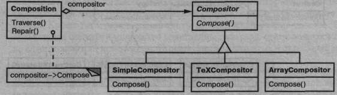
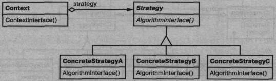

Название и классификация паттерна
Стратегия - паттерн поведения объектов.
Назначение
Определяет семейство алгоритмов, инкапсулирует каждый из них и делает их взаимозаменяемыми. Стратегия позволяет изменять алгоритмы независимо от клиентов, которые ими пользуются.
Известен также под именем
Policy (политика).
Мотивация
Существует много алгоритмов для разбиения текста на строки. Жестко «зашивать» все подобные алгоритмы в классы, которые в лих нуждаются, нежелательно по нескольким причинам:
- клиент, которому требуется алгоритм разбиения на строки, усложняется при включении в него соответствующего кода. Таким образом, клиенты становятся более громоздкими, а сопровождать их труднее, особенно если нужно поддержать сразу несколько алгоритмов;
- в зависимости от обстоятельств стоит применять тот или иной алгоритм. Не хотелось бы поддерживать несколько алгоритмов разбиения на строки, если мы не будем ими пользоваться;
- если разбиение на строки - неотъемлемая часть клиента, то задача добавления новых и модификации существующих алгоритмов усложняется.
Всех этих проблем можно избежать, если определить классы, инкапсулирующие различные алгоритмы разбиения на строки. Инкапсулированный таким образом алгоритм называется стратегией.
Предположим, что класс Composition отвечает за разбиение на строки текста, отображаемого в окне программы просмотра, и его своевременное обновление. Стратегии разбиения на строки определяются не в классе Composition, а в подклассах абстрактного класса Compositor. Это могут быть, например, такие стратегии:
- SimpleCompositor реализует простую стратегию, выделяющую по одной строке за раз;
- TeXCompositor реализует алгоритм поиска точек разбиения на строки, принятый в редакторе TJX. Эта стратегия пытается выполнить глобальную оптимизацию разбиения на строки, рассматривая сразу целый параграф;
- ArrayCompositor реализует стратегию расстановки переходов на новую строку таким образом, что в каждой строке оказывается одно и то же число элементов. Это полезно, например, при построчном отображении набора пиктограмм.
Объект Composition хранит ссылку на объект Compositor. Всякий раз, когда объекту Composition требуется переформатировать текст, он делегирует данную обязанность своему объекту Compositor. Клиент указывает, какой объект Compositor следует использовать, параметризуя им объект Composition.
Применимость
Используйте паттерн стратегия, когда:
- имеется много родственных классов, отличающихся только поведением. Стратегия позволяет сконфигурировать класс, задав одно из возможных поведений;
- вам нужно иметь несколько разных вариантов алгоритма. Например, можно определить два варианта алгоритма, один из которых требует больше времени, а другой - больше памяти. Стратегии разрешается применять, когда варианты алгоритмов реализованы в виде иерархии классов [НО87];
- в алгоритме содержатся данные, о которых клиент не должен «знать». Используйте паттерн стратегия, чтобы не раскрывать сложные, специфичные для алгоритма структуры данных;
- в классе определено много поведений, что представлено разветвленными условными операторами. В этом случае проще перенести код из ветвей в отдельные классы стратегий.
Структура
Участники
- Strategy (Compositor) - стратегия:
- объявляет общий для всех поддерживаемых алгоритмов интерфейс. Класс Context пользуется этим интерфейсом для вызова конкретного алгоритма, определенного в классе ConcreteStrategy;
- ConcreteStrategy (SimpleCompositor, TeXCompositor, ArrayCompositor) - конкретная стратегия:
- реализует алгоритм, использующий интерфейс, объявленный в классе Strategy;
- Context (Composition) - контекст:
- конфигурируется объектом класса ConcreteStrategy;
- хранит ссылку на объект класса Strategy;
- может определять интерфейс, который позволяет объекту Strategy получить доступ к данным контекста.
Отношения
- классы Strategy и Context взаимодействуют для реализации выбранного алгоритма. Контекст может передать стратегии все необходимые алгоритму данные в момент его вызова. Вместо этого контекст может позволить обращаться к своим операциям в нужные моменты, передав ссылку на самого себя операциям класса Strategy;
- контекст переадресует запросы своих клиентов объекту-стратегии. Обычно клиент создает объект ConcreteStrategy и передает его контексту, послечего клиент «общается» исключительно с контекстом. Часто в распоряжении клиента находится несколько классов ConcreteStrategy, которые он может выбирать.
Результаты
У паттерна стратегия есть следующие достоинства и недостатки:
- семейства родственных алгоритмов. Иерархия классов Strategy определяет семейство алгоритмов или поведений, которые можно повторно использовать в разных контекстах. Наследование позволяет вычленить общую для всех алгоритмов функциональность;
- альтернатива порождению подклассов. Наследование поддерживает многообразие алгоритмов или поведений. Можно напрямую породить от Context подклассы с различными поведениями. Но при этом поведение жестко «зашивается» в класс Context. Вот почему реализации алгоритма и контекста смешиваются, что затрудняет понимание, сопровождение и расширение контекста. Кроме того, заменить алгоритм динамически уже не удастся. В результате вы получите множество родственных классов, отличающихся только алгоритмом или поведением. Инкапсуляции алгоритма в отдельный класс Strategy позволяют изменять его независимо от контекста;
- с помощью стратегий можно избавиться от условных операторов. Благодаря паттерну стратегия удается отказаться от условных операторов при выборе нужного поведения. Когда различные поведения помещаются в один класс, трудно выбрать нужное без применения условных операторов. Инкапсуляция же каждого поведения в отдельный класс Strategy решает эту проблему. Так, без использования стратегий код для разбиения текста на строки мог бы выглядеть следующим образом:
void Composition: :Repair () { switch (_breakingStrategy) { case SimpleStrategy: ComposeWithSimpleCompositor () ; break; case TeXStrategy: ComposeWithTeXCompositor ( ) ; break; // ... } // если необходимо, объединить результаты с имеющейся // композицией }
Паттерн же стратегия позволяет обойтись без оператора переключения за счет делегирования задачи разбиения на строки объекту Strategy:
void Composition::Repair () { _compositor->Compose(); // если необходимо, объединить результаты // с имеющейся композицией }
Если код содержит много условных операторов, то часто это признак того, что нужно применить паттерн стратегия;
- выбор реализации. Стратегии могут предлагать различные реализации одного и того же поведения. Клиент вправе выбирать подходящую стратегию в зависимости от своих требований к быстродействию и памяти;
- клиенты должны <<знатъ>> о различных стратегиях. Потенциальный недостаток этого паттерна в том, что для выбора подходящей стратегии клиент должен понимать, чем отличаются разные стратегии. Поэтому наверняка придется раскрыть клиенту некоторые особенности реализации. Отсюда следует, что паттерн стратегия стоит применять лишь тогда, когда различия в поведении имеют значение для клиента;
- обмен информацией между стратегией и контекстом. Интерфейс класса Strategy разделяется всеми подклассами ConcreteStrategy — неважно, сложна или тривиальна их реализация. Поэтому вполне вероятно, что некоторые стратегии не будут пользоваться всей передаваемой им информацией, особенно простые. Это означает, что в отдельных случаях контекст создаст и проинициализирует параметры, которые никому не нужны. Если возникнет проблема, то между классами Strategy и Context придется установить более тесную связь;
- увеличение числа объектов. Применение стратегий увеличивает число объектов в приложении. Иногда эти издержки можно сократить, если реализовать стратегии в виде объектов без состояния, которые могут разделяться несколькими онтекстами. Остаточное состояние хранится в самом контексте и передается при каждом обращении к объекту-стратегии. Разделяемые стратегии не должны сохранять состояние между вызовами. В описании паттерна приспособленец этот подхбд обсуждается более подробно.
Реализация
Рассмотрим следующие вопросы реализации:
-
определение интерфейсов классов Strategy и Context. Интерфейсы классов Strategy и Context могут обеспечить объекту класса ConcreteStrategy эффективный доступ к любым данным контекста, и наоборот.
Например, Context передает данные в виде параметров операциям класса Strategy. Это разрывает тесную связь между контекстом и стратегией. При этом не исключено, что контекст будет передавать данные, которые стратегии не нужны.
Другой метод - передать контекст в качестве аргумента, в таком случае стратегия будет запрашивать у него данные, или, например, сохранить ссылку на свой контекст, так что передавать вообще ничего не придется. И в том, и в другом случаях стратегия может запрашивать только ту информацию, которая реально необходима. Но тогда в контексте должен быть определен более развитый интерфейс к своим данным, что несколько усиливает связанности классов Strategy и Context.
Какой подход лучше, зависит от конкретного алгоритма и требований, которые он предъявляет к данным; - стратегии как параметры шаблона. В C++ для конфигурирования класса стратегией можно использовать шаблоны. Этот способ хорош, только если стратегия определяется на этапе компиляции и ее не нужно менять во время выполнения. Тогда конфигурируемый класс (например, Context) определяется в виде шаблона, для которого класс Strategy является параметром:
template <class AStrategy> class Context { void Operation)) { theStrategy .DoAlgorithm( ) ; } // ... private : AStrategy theStrategy; }
Затем этот класс конфигурируется классом Strategy в момент инстанцирования:
class MyStrategy { public: void DoAlgorithm( ) ; }; Context(MyStrategy> aContext;
При использовании шаблонов отпадает необходимость в абстрактном классе для определения интерфейса Strategy. Кроме того, передача стратегии в виде параметра шаблона позволяет статически связать стратегию с контекстом, вследствие чего повышается эффективность программы; и объекты-стратегии можно не задавать. Класс Context разрешается упростить, если для него отсутствие какой бы то ни было стратегии является нормой. Прежде чем обращаться к объекту Strategy, объект Context проверяет наличие стратегии. Если да, то работа продолжается как обычно, в противном случае контекст реализует некое поведение по умолчанию. Достоинство такого подхода в том, что клиентам вообще не нужно иметь дело со стратегиями, если их устраивает поведение по умолчанию.
Пример кода
Из раздела «Мотивация» мы приведем фрагмент высокоуровневого кода, в основе которого лежат классы Composition и Compositor из библиотеки Interviews [LCI+92].
В классе Composition есть коллекция экземпляров класса Component, представляющих текстовые и графические элементы документа. Компоновщик, то есть некоторый подкласс класса Compositor, составляет из объектов-компонентов строки, реализуя ту или иную стратегию разбиения на строки. С каждым объектом ассоциирован его естественный размер, а также свойства растягиваемости и сжимаемости. Растягиваемость определяет, насколько можно увеличивать объект по сравнению с его естественным размером, а сжимаемость — насколько можно этот размер уменьшать. Композиция передает эти значения компоновщику, который использует их, чтобы найти оптимальное место для разрыва строки.
class Composition {
public:
Composition(Compositor*);
void Repair();
private:
Compositor* _compositor;
Component* _components; // список компонентов
int _componentCount; // число компонентов
int _lineWidth; // ширина строки в композиции Composition
int* _lineBreaks; // позиции точек разрыва строки
// (измеренные в компонентах)
int _lineCount; // число строк
}
Когда возникает необходимость изменить расположение элементов, композиция запрашивает у компоновщика позиции точек разрыва строк. При этом она передает компоновщику три массива, в которых описаны естественные размеры, растягиваемость и сжимаемость компонентов. Кроме того, передается число компонентов, ширина строки и массив, в который компоновщик должен поместить позиции точек разрыва. Компоновщик возвращает число рассчитанных им точек разрыва.
Интерфейс класса Compositor позволяет композиции передать компоновщику всю необходимую ему информацию. Приведем пример передачи данных стратегии:
class Compositor {
public:
virtual int Compose(
Coord natural[], Coord stretch.!]. Coord ahrink[],
int componentCount, int lineWidth, int breaks[]
) = 0;
protected:
Compositor();
}
Заметим, что Compositor - это абстрактный класс. В его конкретных подклассах определены различные стратегии разбиения на строки.
Композиция обращается к своему компоновщику посредством операции Repair, которая прежде всего инициализирует массивы, содержащие естественные размеры, растягиваемость и сжимаемость каждого компонента (подробности мы опускаем). Затем Repair вызывает компоновщика для получения позиций точек разрыва и, наконец, отображает документ (этот код также опущен):
void Composition::Repair () {
Coord* natural;
Coord* stretchability;
Coord* shrinkability;
int componentCount;
int* breaks;
// подготовить массивы с характеристиками компонентов
// ...
// определить, где должны быть точки разрыва
int breakCount;
breakCount = _compositor->Compose(
natural, stretchability, shrinkability,
componentCount, _lineWidth, breaks
);
// разместить компоненты с учетом точек разрыва
// ...
}
Теперь рассмотрим подклассы класса Compositor. Класс SimpleCompositor для определения позиций точек разрыва исследует компоненты по одному:
class SimpleCompositor : public Compositor {
public:
SimpleCompositor();
virtual int Compose(
Coord natural[], Coord stretch[], Coord shrink[],
int componentCount, int lineWidth, int breaks[]
);
// ...
}
Класс TeXCompositor использует более глобальную стратегию. Он рассматривает абзац целиком, принимая во внимание размеры и растягиваемость компонентов. Данный класс также пытается равномерно «раскрасить» абзац, минимизируя ширину пропусков между компонентами:
class TeXCompositor : public Compositor {
public:
TeXCompositor();
virtual int Compose(
oord natural[], Coord stretch[]. Coord shrink[],
int componentCount, int lineWidth, int breaks[]
) ;
// ...
}
Класс ArrayCompositor разбивает компоненты на строки, оставляя между ними равные промежутки:
class ArrayCompositor : public Compositor {
public:
ArrayCompositor(int interval);
virtual int Compose(
Coord natural!], Coord stretch!], Coord shrink!],
int componentCount, int lineWidth, int breaks[]
);
// ...
}
He все из этих классов используют в полном объеме информацию, переданную операции Compose. SimpleComposiLor игнорирует растягиваемость компонентов, принимая во внимание только их естественную ширину. TeXCompositor использует всю переданную информацию, a ArrayCompositor игнорирует ее.
При создании экземпляра класса Composition вы передаете ему компоновщик, которым собираетесь пользоваться:
Composition* quick = new Composition (new SimpleCompositor) ;
Composition* slick = new Composition (new TeXCompositor);
Composition* iconic = new Composition (new ArrayCompositor (100) );
Интерфейс класса Compositor тщательно спроектирован для поддержки всех алгоритмов размещения, которые могут быть реализованы в подклассах. Вряд ли вам захочется изменять данный интерфейс при появлении каждого нового подкласса, поскольку это означало бы переписывание уже существующих подклассов. В общем случае именно интерфейсы классов Strategy и Context определяют, насколько хорошо паттерн стратегия соответствует своему назначению.
Известные применения
Библиотеки ЕТ++ [WGM88] и Interviews используют стратегии для инкапсуляции алгоритмов разбиения на строки - так, как мы только что видели.
В системе RTL для оптимизации кода компиляторов [JML92] с помощью стратегий определяются различные схемы распределения регистров (RegisterAllocator) и политики управления потоком команд (RISCscheduler, CISCscheduler). Это позволяет гибко настраивать оптимизатор для разных целевых машинных архитектур.
Каркас ЕТ++ SwapsManager предназначен для построения программ, рассчитывающих цены для различных финансовых инструментов [EG92]. Ключевыми абстракциями для него являются Instrument (инструмент) и YieldCurve (кривая дохода). Различные инструменты реализованы как подклассы класса Instrument. YieldCurve рассчитывает коэффициенты дисконтирования, на основе которых вычисляется текущее значение будущего движения ликвидности. Оба класса делегируют часть своего поведения объектам-стратегиям класса Strategy. В каркасе присутствует семейство конкретных стратегий для генерирования движения ликвидности, оценки оборотов и вычисления коэффициентов дисконтирования. Можно создавать новые механизмы расчетов, конфигурируя классы Instrument и YieldCurve другими объектами конкретных стратегий. Этот подход поддерживает как использование существующих реализаций стратегий в различных сочетаниях, так и определение новых.
В библиотеке компонентов Грейди Буча [BV90] стратегии используются как аргументы шаблонов. В классах коллекций поддерживаются три разновидности стратегий распределения памяти: управляемая (распределение из пула), контролируемая (распределение и освобождение защищены замками) и неуправляемая (стандартное распределение памяти). Стратегия передается классу коллекции в виде аргумента шаблона в момент его инстанцирования. Например, коллекция UnboundedCollection, в которой используется неуправляемая стратегия, инстанцируется как UnboundedCollection<MyItemType* , Unmanaged>.
RApp - это система для проектирования топологии интегральных схем [GA89, AG90]. Задача RApp - проложить провода между различными подсистемами на схеме. Алгоритмы трассировки в RApp определены как подклассы абстрактного класса Router, который является стратегией.
В библиотеке ObjectWindows фирмы Borland [Вог94] стратегии используются в диалоговых окнах для проверки правильности введенных пользователем данных. Например, можно контролировать, что число принадлежит заданному диапазону, а в данном поле должны быть только цифры. Не исключено, что при проверке корректности введенной строки потребуется поиск данных в справочной таблице.
Для инкапсуляции стратегий проверки в ObjectWindows используются объекты класса Validator — частный случай паттерна стратегия. Поля для ввода данных делегируют стратегию контроля необязательному объекту Validator. Клиент при необходимости присоединяет таких проверяющих к полю (пример необязательной стратегии). В момент закрытия диалогового окна поля «просят» своих контролеров проверить правильность данных. В библиотеке имеются классы контролеров для наиболее распространенных случаев, например RangeValidator для проверки принадлежности числа диапазону. Но клиент может легко определить и собственные стратегии проверки, порождая подклассы от класса Validator.
Родственные паттерны
Приспособленец: объекты-стратегии в большинстве случаев подходят как приспособленцы.